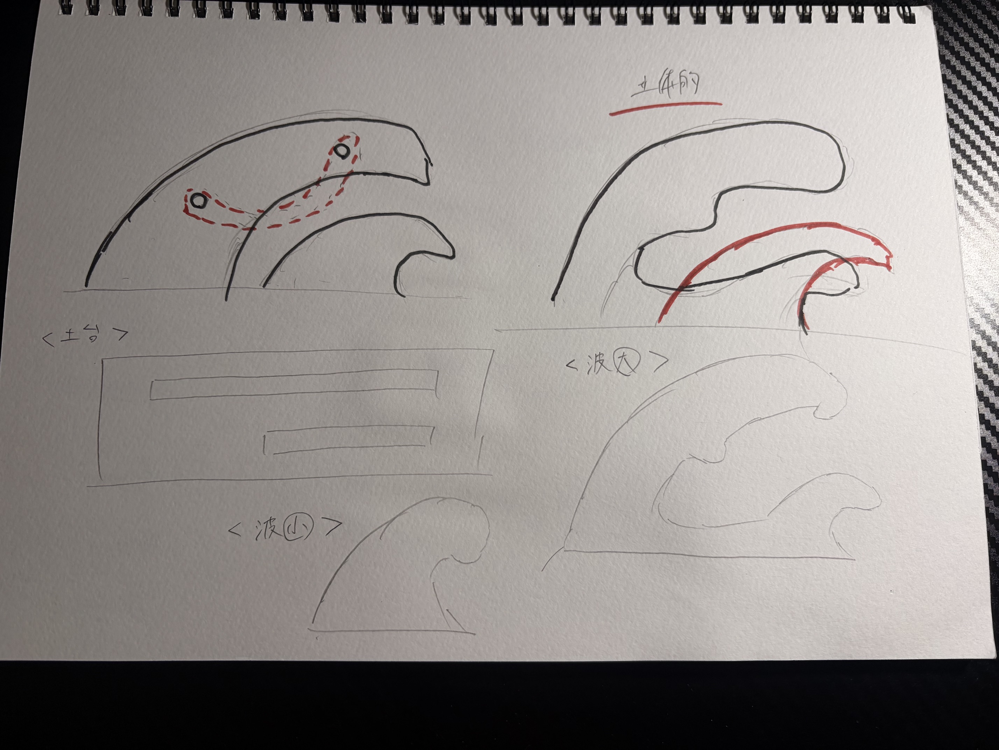
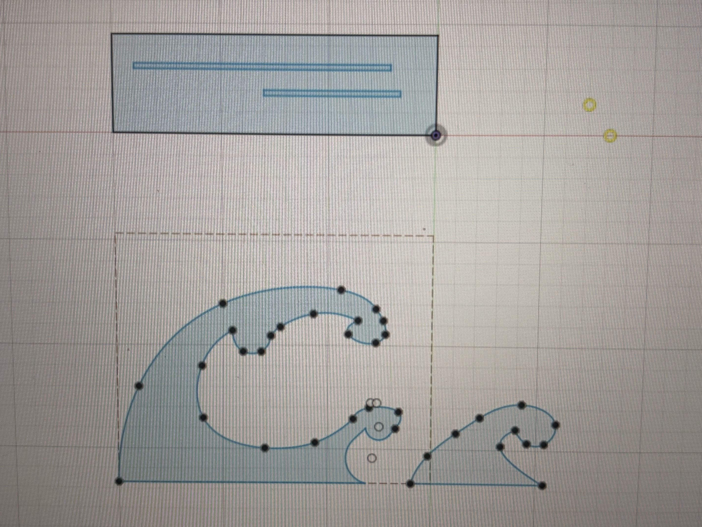
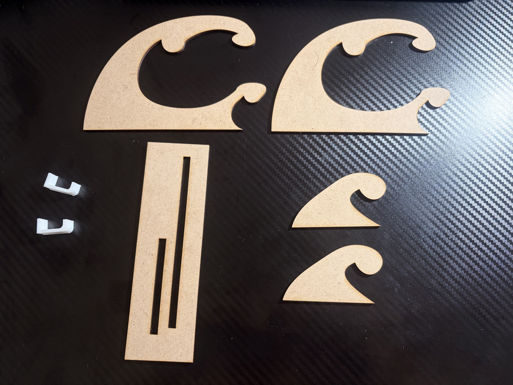
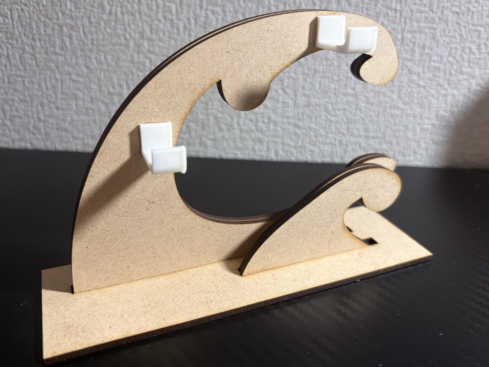
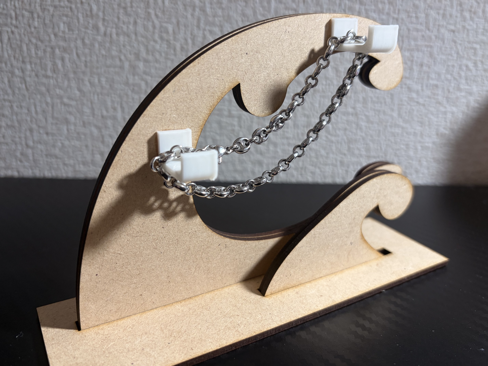

作品を作った理由
今回は、友達からもらった大切なブレスレットを 飾るためのアクセサリースタンドを制作しました。 以前からブレスレットを置く場所が決まって いなかったため、波をモチーフにした置物に 飾ることで、ブレスレットが波と一体化するような デザインにしたいと考えました。
スケッチ・デザインの考案

最初に考えたデザインのスケッチ
最初は波を1枚だけで作ろうと考えていました。 しかし、波を2枚使って前後に配置することで、 平面的ではなく立体感のある波を表現できると 思い、このデザインにしました。
Fusion 360での設計

Fusion 360での設計画面
今回はFusion 360を使って設計を行いました。 使用できる素材に限りがあったため、 最初に長方形で大まかなサイズを決め、 その範囲内に収まるように波の形や土台を 作成していきました。
Illustratorでの調整
Fusion 360で作成したデザインをIllustratorで 調整した際、波を1枚だけで作ると厚みが 足りないことがわかりました。 そのため、波の部分をそれぞれ2枚ずつに変更し、 土台に差し込む溝の部分も2倍にしました。 このように変更することで、強度と立体感を 考えた設計にすることができました。
レーザーカット後の部品

組み立てる前の部品
設計したデータをもとにレーザーカッターで 木材を加工しました。 波のパーツや土台など、それぞれの部品を 切り出して組み立ての準備をしました。
組み立て後の様子

組み立て後の作品
それぞれの部品を土台に差し込んで組み立てると、 このような形になりました。 前後に配置した2枚の波によって、 波の立体感を表現することができました。
3Dプリンターを使った工夫
最初の設計では、ブレスレットを引っかける部分を 作っていなかったため、3Dプリンターで 専用のパーツを制作して代用しました。 木材だけでは難しかった部分を3Dプリンターで 補うことで、実際にブレスレットを掛けられる ように工夫しました。
完成した作品

ブレスレットを掛けた完成作品
実際にブレスレットを掛けてみると、 波の形とブレスレットが組み合わさり、 作品全体の立体感がより増したように感じました。 最初に考えていた、ブレスレットが波と一体化するようなデザインに近づけることができました。
2枚の波を前後に配置することで立体感を出し、 3Dプリンターで制作したパーツを組み合わせることで、 実際にブレスレットを飾れる作品にしました。
設計ファイル
今回制作した「波と一体化」の設計データです。 Fusion 360で作成したデータをDXF形式で保存しました。 以下から設計ファイルを確認できます。
作品名：波と一体化
ファイル形式：DXF
制作を終えて
今回は前回とは素材が異なり、使用できる素材にも 制限があったため、その条件の中で作品を作ることは 難しかったです。また、最初に考えた自分が 本当に作りたかったものに近づけることも 簡単ではありませんでした。 しかし、最終的には3Dプリンターも活用して 作品を完成させることができ、自分なりに 良いものを作ることができたと思います。